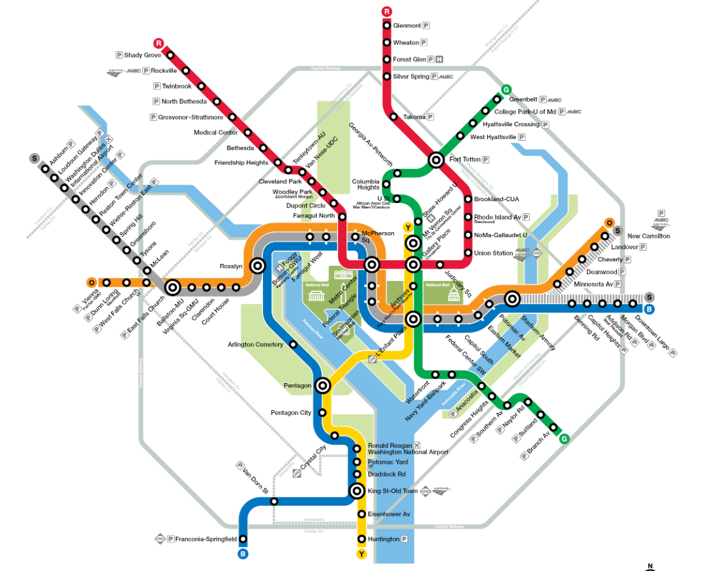
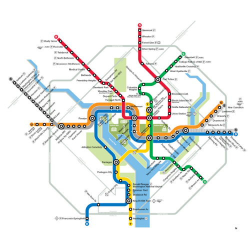

How to Use the Metro in D.C

Last Updated: 12-04-2025
Introduction
The first time using a metro can be intimidating.
This guide will help you be an expert your first trip.
This tutorial is on how to use the metro in Washington D.C..
Read the Rules
The first thing you want to do is look up the metro rules.
Know What to Expect
Before you even walk into the metro station, you need to know what to expect.
To use the metro, you will:
- Step 1: Look up the closest metro station to your current location or the one you will ride to your destination using.
- Step 2: Look up the closest metro station to your desired destination and determine what time you need to get to the destination.
- Step 3: Find your stations on the metro map below and determine the metro lines you need to take amd how long it will take to get there and what time you need to be at the station. For example, if you are at Dunn Loring station and you want to go to Shady Grove, you need to take the Orange line towards New Carrollton to Metro Center, then at Metro Center take a Red line towards Shady Grove to Shady Grove. When you go to the metro station, the metro trains will have the name of the station they are going towards on them, it will always be the first/last station on the color line (so for the orange line, the metro train will either say Vienna or New Carrollton - for the red line, the metro train will either say Shady Grove or Glenmont - and so on)

- Step 3: Walk into the metro station. IF you don't have a metro card (SmarTrip Card), buy one and add funds to it at the vending machine on the wall. D.C. Metro Card Info
- Step 4: Approach the line of gates and scan your SmarTrip Card to enter down into the metro train pick-up/drop-off area.
-
Step 5:
There will be two sides for metro trains going opposite directions.
Pay attention to the words on the front of the metro train to know which side you need to pay attention to.
The words will be a color or the name of a metro station, or it might just be a metro station.
The color is the 'metro line' the train runs along (i.e orange line, silver line, blue line, red line, green line, etc.).
The metro station is the DIRECTION the metro train is traveling, and it corresponds to the metro station at the very end of the metro line.
To understand what I mean, see the map.
If a metro train is showing 'Vienna', it is 'an Orange Line train going TOWARDS Vienna', which is the last station of the Orange Line (in the west). If the metro train is showing 'New Carrollton,' it is an Orange Line train going TOWARDS New Carrollton, the last station on the Orange Line (in the east). If the metro train is showing 'Huntington,' you know it is 'a Yellow Line train going towards Huntington,' which is the last station of the Yellow Line (in the south). You get it... The color is which 'metro line' the train runs along (i.e. Orange Line, Silver Line, etc.). See the map to know what I mean. The other name is the first/last metro station on that metro color line and it tells you the DIRECTION the metro train is traveling. Wait for your metro train (most lines run every 5-12 minutes).
- Step 6: Get on the appropriate metro train and get off at the station that is closest to your desired destination.
- Step 7: Exit the metro station and approach the line of gates and scan your SmarTrip Card to exit the station.
Know Your Station Destination
Next, do your research and find the closest metro station to your current location, and the closest station to your destination.
metro map you can see which metro stations have parking, denoted by the P in a square beside the station name. Parking is around $20 for the day for most stations, but do your own research.
Get a Metro Card
Before you can use the D.C. metro, you need to get a metro card (SmarTrip Card) from the blue vending machines on the wall, which every station has, and add money to it.
You can also download an app.
Enter the Metro Station
After you get your metro card, you will need to approach the gates that are lined up. Scan the metro card on the 'SmarTrip' image and the gate that the green arrow points to will open and you will enter through it and go down the stairs/escalator/elevator to where the metro trains will stop to let people off and on.
You will also need to scan the metro card/app to exit the metro station, and once you exit, you will be charged based on how long you used the metro for.
For the D.C. metro system, customers that tap in and out of the same metro station within 15 minutes, and do not use a rail pass, will receive a trip credit in the amount of the fare they were charged.
Explaining the Metro Station
Familiarize yourself with the first and last stops on each color line, and/or take a metro map with you on your trip.
Switching Color Lines
The big circles show you the stations where multiple color lines intersect, so you can switch color lines if you need to.
For example, lets say I am at the Vienna metro station (western end of the Orange Line) but I want to go to Shady Grove (end of the Red Line).
I would have to ride the Orange Line towards New Carrollton all the way to the Metro Center station, then get on a Red Line towards Shady Grove.
Wrapping it Up
In summary, know the rules; know the map; and know what the words on the metro train refer to and you are all set!